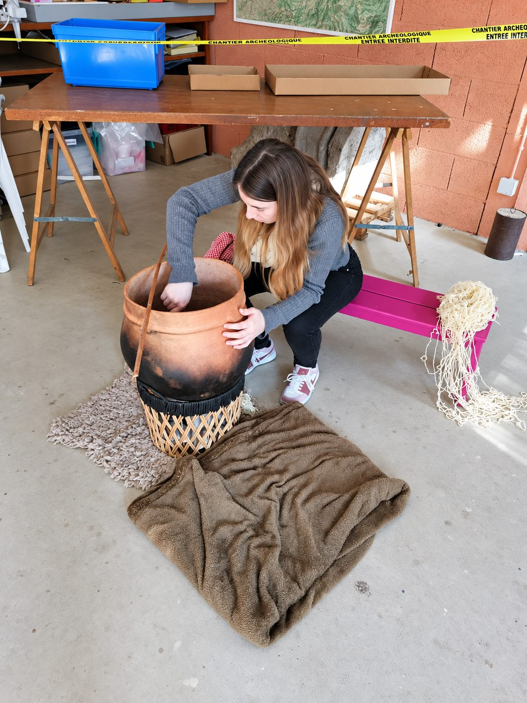

Contact
Vous souhaitez contacter l’association Néotisse pour proposer un atelier autour des techniques textiles anciennes ?Nous serons ravies d’échanger avec vous afin de concevoir une intervention adaptée à votre projet, à vos publics et à vos besoins.
Contacter l’association Néotisse

01
Écrire à l’association
Le plus simple est d’utiliser le formulaire ci-dessus. Vous pouvez aussi écrire directement à asso.neotisse@gmail.com : nous répondons par e-mail, en général sous quelques jours.
02
Préparer votre demande
- le type d’atelier souhaité ;
- le public concerné et le nombre de participants ;
- la date, la durée et le lieu envisagés ;
- vos contraintes logistiques et votre budget.
03
En savoir plus
Découvrez nos ateliers de techniques textiles anciennes et faites connaissance avec l’équipe avant de nous écrire.